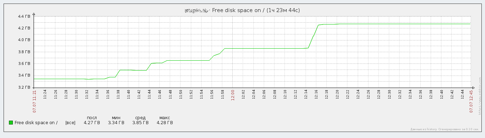

Установим пакет, специально предназначенный для удаления ненужных пакетов:
# apt-get install debfoster
Удаляем пакеты, которые по нашему мнению не нужны. Предлагаются к выбору только те пакеты, от которых не зависят другие:
# debfoster
Создадим скрипт с именем no_repo.sh, который выведет список установленных пакетов, отсутствующих в текущих репозиториях:
#!/bin/sh
dpkg -l | awk '/^ii/ { print $2; }' \
| while read pkg;
do
apt-cache policy $pkg \
| awk -v pkg=$pkg 'BEGIN { local = 0;
repo = 0; }
/^[ ]+[0-9]+ .*status$/ { local = 1; }
/^[ ]+[0-9]+ / && !/status$/ { repo = 1; }
END { if ((local == 1) && (repo == 0))
print pkg; }'
done
Дадим скрипту право быть запущенным:
$ chmod +x not_repo.sh
Составляем список пакетов, отсутствующих в текущих репозиториях:
$ ./not_repo.sh > not_repo
Редактируем полученный список, удаляя из него пакеты, которые нам нужны или которые были установлены вручную. Затем удаляем оставшиеся:
# apt-get purge `cat not_repo`
Составляем список удалённых пакетов, от которых остались какие-либо файлы:
$ dpkg -l | awk '$1 !~ /^ii/ { print $2; }' > removed
Редактируем полученный список, удаляя из него пакеты, файлы конфигурации и файлы данных которых нужно оставить нетронутыми. Далее удаляем оставшиеся:
# apt-get purge `cat removed`
Теперь осталось удалить пакеты, установленные автоматически и больше не нужные:
# apt-get autoremove
Результат - удалось высвободить почти гигабайт места:
